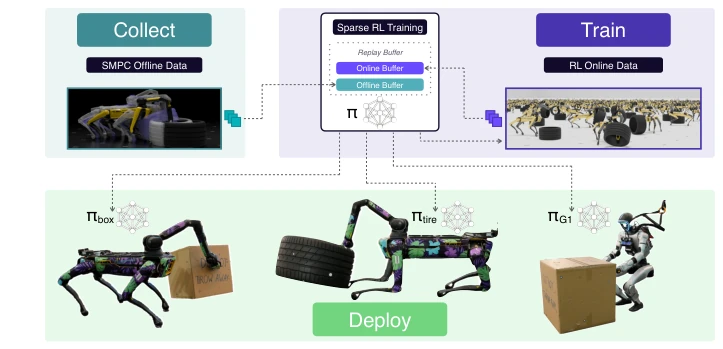
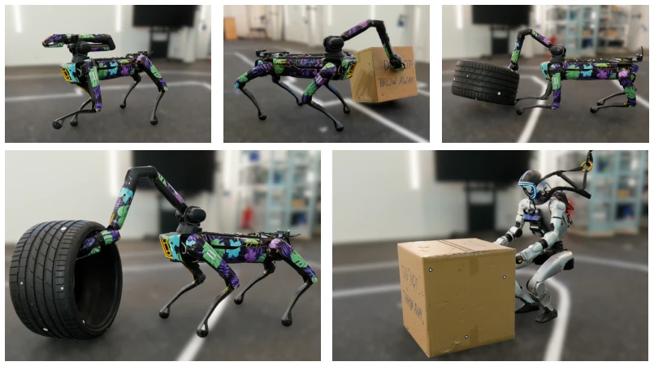
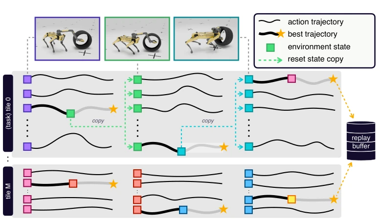
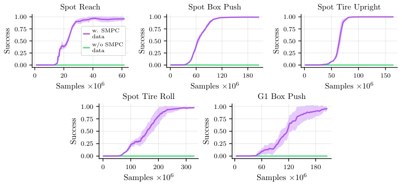
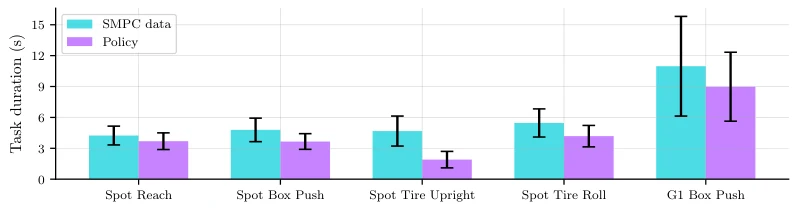
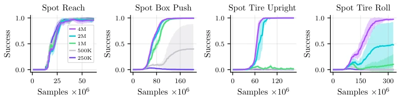
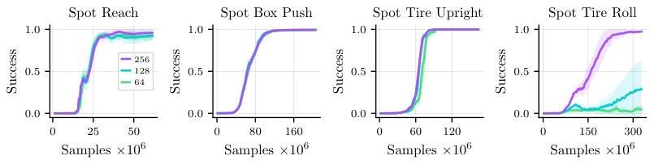
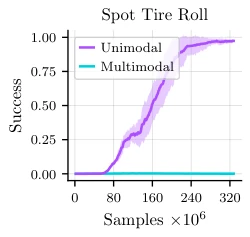
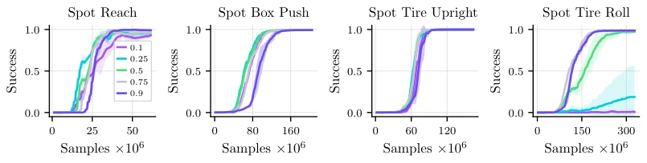
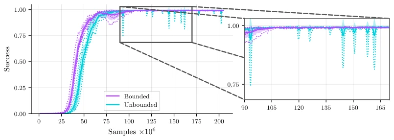

This paper attempts to address the pain point of cumbersome reward function design in reinforcement learning for complex whole-body locomotion manipulation (Loco-Manipulation). The authors cleverly employ SMPC as an automatic teacher in simulation to generate a large amount of demonstration data, allowing RL to learn skills facing only sparse rewards, and finally execute on real hardware. The highlight is indeed saving the torment of manual parameter tuning, and the RL policy runs faster than the SMPC teacher, achieving robust Sim-to-Real transfer. However, to be critical, this is essentially a variant of imitation learning that changes the form but not the substance; the RL policy is locked by the SMPC data distribution, making it hard to escape local optima and unable to discover global strategies fundamentally different from trajectories. Moreover, the frozen low-level controller limits adaptability in real environments. Overall, it is a practical engineering solution, but theoretical breakthroughs are limited; do not expect it to learn moves unseen by humans, suitable for rapid deployment rather than exploring new paradigms.
Combining locomotion and manipulation is key to embodied intelligence, but pure RL methods face severe challenges. Scaling complex tasks relies on dense reward shaping (Dense Reward Shaping) to guide exploration, while adjusting reward functions requires long training cycles with extremely low iteration efficiency [1, 2, 3]. Although optimal control strategies like SMPC are easy to debug [4, 5], their computational cost is high, making direct deployment on high-degree-of-freedom hardware difficult. Existing RL-based methods mostly rely on human teleoperation or motion capture to generate demonstrations [12, 13], but this has poor scalability on non-humanoid robots. Therefore, a framework is needed that can utilize SMPC to quickly generate data while achieving sparse reward training and surpassing expert performance through RL, to solve exploration difficulties and reward engineering bottlenecks, achieving efficient skill acquisition.
The overall architecture adopts a hierarchical control structure: the high-level task policy (RL) outputs velocity/joint increments, while the low level is guaranteed dynamic stability by a frozen ReLIC controller. In the data collection phase, SMPC is used in simulation to generate expert trajectories through parallel vectorized environments; SMPC uses dense cost functions but can be debugged in real-time. The training phase adopts the Offline-to-Online RL paradigm, modified based on FastTD3. Key innovations include: 1) Using only sparse task rewards (0 for success, -1 for failure), completely eliminating manual reward engineering; 2) Mixing 50% expert data in the Replay Buffer to guide initial exploration, gradually eliminating it as success rate improves; 3) Applying bounded constraints (Bounded Critics) to the Critic network output to prevent Q-value overestimation leading to training instability. The final policy is deployed on real hardware, achieving Sim-to-Real transfer.
Validated on Spot quadruped and G1 humanoid robots across 5 whole-body manipulation tasks (e.g., pushing boxes, rolling tires). Metrics include success rate and task completion time. Results show that after adding SMPC data, sparse reward RL can converge to nearly 100% success rate, while without data it cannot learn. The RL policy is significantly superior to SMPC experts in task completion time (improvement over 50%). Ablation studies show: the more complex the task, the larger the required data volume (hardest task requires 4 million samples); data quality (number of sampled environments) affects high-coordination task performance; multimodal demonstration data leads to training failure, requiring unimodal; too low expert data ratio leads to collapse in complex tasks. This proves the framework's robustness and generalization.
其他图片Other Figures

Figure 1: The three main stages of our proposed pipeline. We first collect a dataset from an expert Sample-based Model Predictive Control (SMPC), which is easy to tune in near real-time. We then train complex loco-manipulation policies with sparse rewards solely by mixing in the offline expert data, skipping tedious reward tuning. Finally, the sparse-reward policies are deployed on hardware. Website: https://pages.rai-inst.com/smpc2rl/

Figure 2: Real-world deployment of our tasks. Our framework learns complex loco-manipulation skills across different embodiments (Spot and G1), objects (boxes and tires), and skills (pushing, rolling, or lifting). From left to right, top to bottom: Spot reach, box pushing, tire uprighting, tire rolling, and G1 box pushing.

Figure 3: We scale our SMPC data collection by solving multiple SMPCs in parallel on the GPU using vectorized environments divided into tiles. Each tile broadcasts its initial task to all its envi- ronments upon reset, runs sampled actions, selects the best trajectories, and adds them to our expert buffer. Note the different x-axes scales for a task’s trajectory steps and total simulation steps.

Figure 4: Training performance of our framework on different tasks. We show the success rate of our policy over time in increasingly complex tasks. Our framework reliably reaches success rates close to 100% in simulation without any reward shaping. Without adding expert SMPC data, learning complex loco-manipulation policies from sparse rewards fails to learn anything. Statistics are averaged over five seeds, with the shaded area representing the standard deviation.

Figure 5: We compare the performance of policies trained on sparse rewards (pink) and the SMPC used to generate the offline dataset on all tasks (blue). Our trained policies consistently finish the tasks faster than the SMPC experts. SMPC statistics are computed over the complete dataset of 4M samples, policy statistics are averaged over 50k simulated episodes without exploration noise.

Figure 6: Training performance with different SMPC dataset sizes. For simple tasks (i.e., naviga- tion), reducing the number of samples has little effect. As tasks get more complex, the minimum required dataset size increases. On our most difficult task, agents require four million samples col- lected within 4 GPU hours to converge.

Figure 7: Performance under varying data quality. We reduce the number of sampling environments per tile during data generation and train policies on the resulting datasets. Most tasks are robust to lower-quality data, whereas tasks that require high coordination are sensitive.

Figure 8: Using multi-modal SMPC data heavily affects training and agents fail to learn viable policies.

Figure 9: We ablate the influence of the fraction of expert data in the buffer on training. Most tasks are robust to the choice of the expert data ratio. The exception is tire rolling, which greatly benefits from more expert data initially and collapses below 50% expert data. Note that all runs additionally use the phase-out threshold of 0.1, so the expert data ratio only directly influences the initial training phase.

Figure 10: Bounded critics stabilize the training (here Spot box pushing). In parameter ranges at the edges of what is still stable, bounded critics are still well-behaved (pink), whereas unbounded critics start to exhibit sharp drops in performance (blue).